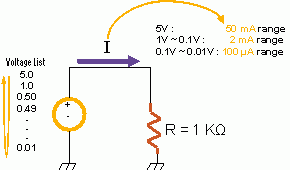
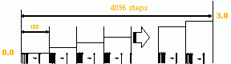
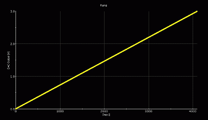
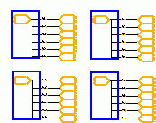
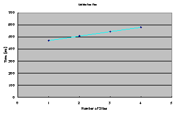
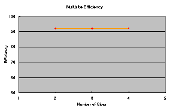
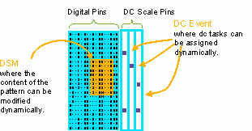

Revolutionary Dynamic DC Measurement Using DC Scale on the Verigy V93000 Test System
Aether Lee, Verigy
Takashi Shibata, Verigy
Paper ID 110048
Abstract
DC Scale addresses the need for pattern synchronized, highly efficient, and massive parallel resources optimized for DC measurement. By deploying Dynamic Measurement, the newest feature introduced with SmarTest 6.3, a user can force or measure DC parameters in parallel across different pins at a specific position of time anchored in a pattern.
In this paper, two different test setups feature this new functionality: a stepped VFIM test across different measurement ranges, and a DAC linearity test. Test time overhead, accuracy, parallel efficiency, and test repeatability are to be analyzed. Furthermore, pattern composing skill for better collaboration with DC Scale will be demonstrated. Also, an advanced example using dynamic pattern editing together with dynamic DC measurement is presented to show an often-requested test of a register-configured device parameter.
Key Words
DC Measurement, DC Scale, Dynamic DC
Introduction
Dynamic DC Measurement addresses the need for synchronizing voltage or current measurement and/or voltage forcing with pattern execution. The built-in test processor-per-pin on Verigy's V93000 test system makes this revolutionary breakthrough possible. The test processor is of the same technology as that of the Pin Scale 400 card. The implementation of Dynamic DC Measurement is based on a per-pin sequencer program for each channel in DC Scale card.
Dynamic DC Measurement
The idea of Dynamic DC Measurement is to define a
change in forcing value and/or an occurring measurement as an event and to anchor that event in
a pattern. To define an event, a firmware command DFTD has to be composed in
the primary level file. To anchor an event, it is TPSE in the corresponding
vector label file. Both firmware commands adapt XML syntax. Hence, the composition can be done
in any text editor.
DFTD defines the type of the event as well as the
related setup value. Three kinds of events can be defined. SetMeasureRange sets
the voltage or the current measurement range for the following measurements.
SetForceValue sets the value of a voltage force event. The current forcing
event is not supported yet. Measure is to set the type of measurement: voltage or
current, samples to take, and the pass limit as well. A name has to be assigned to each event
defined in DFTD. The name will be referred to by TPSE later on
in the vector label file.
TPSE anchors events at vector numbers instead
of cycle numbers. Those events are referred to by names in the same specific namespace addressed
by DFTD. Since it is the name being referred to, events can be reused. Along
with anchoring by vector numbers, TPSE syntax provides the optimal flexibility
to compose the pattern in a compact way.
The execution of Dynamic DC Measurement is simply a functional test. When the passing limit has been declared in the event definition, the measurement will be judged right away at each anchor. The result of each judgment will also affect the overall functional test result. That is to say, if any of the DC measurements fail, the result of functional test will fail as well. Furthermore, since pass/fail judgment is done in the DC Scale channels and involves no data uploading there will be no extra overhead introduced.
The value of each measurement can be uploaded by calling a specific API. The API uploads all the data of all pins in one shot, and then another can retrieve the measured values for each pin of interest. The scheme reduces the uploading overhead.
Test Case 1: Stepped VFIM
In this section, an example of Dynamic VFIM (voltage force current measure) will be shown here.
The voltage forcing curve deployed is V-shaped. The voltage droops down first and then raises up to restore the initial value. In the center of each step, a current measurement is taken to monitor the current flow. Each measurement can take more than four samples to ensure accuracy.
The test challenge is that the current measure goes across different current measurement ranges. However, setting the range can be done with a corresponding test event in Dynamic DC. In a single pattern run, current measurement in one range can be performed first and then it changes to another range to perform the following measurement in sequence.

Figure 1. Setup for Test Case 1
In this example, a DPS32 channel is used to force voltages according to a defined list against a resistor to ground, and to measure current for each voltage.
104 current measurements are performed in one shot, and the total test time is 72.107 ms which means 0.693 ms per measurement. Parallel efficiency has been examined. Dynamic DC can outperform 97% as efficiently.
Number of Channels |
Test Time [ms] |
Parallel Efficiency |
|---|---|---|
1 |
72.107 |
- |
2 |
73.967 |
>97% |
3 |
75.681 |
>97% |
4 |
77.718 |
>97% |
This example can be extended to V-Bump test, Voltage Build-up Sequence Monitoring, or IDDQ test.
Test Case 2: Static DAC Test
Linearity test is the test item in focus. A DC Scale channel is performing the digitizing task while another one is sourcing the ramp to simulate the device output of a DAC. From the setup point of view, the digitizing channel involves only measure events, and the sourcing channel calls only force events.

Figure 2. Test Setup of Test Case 2
In the setup, six digitizing-sourcing pairs and four sites have been configured to demonstrate the case that there is more than one DAC in the device and multi-site testing is deployed.
The source simulates the output of a 12-bit DAC so there are 4096 steps in the ramp. When the full scale is 3.0V, the ideal LSB is as small as 0.7326 mV which challenges the accuracy of the instrument. In high accuracy mode, DC Scale VI32 specs the resolution as 50 uV with +/-200 uV accuracy. So VI32 can perform the test.

Figure 3. Measured Ramp Waveform
The digitizing channel then takes 16 samples at every step. DC Scale channels are capable of performing hardware averaging. 16 samples will be averaged and only one value is returned to workstation. DNL and INL are then calculated with returned values. Measured absolute maximum DNL is 0.776 LSB and absolute maximum INL is 0.723 LSB.

Figure 4. Multi-site Test Setup
Since there are 32 channels per DC Scale card, high pin count multi-site test can be implemented. As shown in Figure 3, a 4-site test program is built to examine the multi-site efficiency. The test time for single site is 470.812 ms and for quad-site is 581.133 ms which means 92% multi-site efficiency is achieved.

Figure 5. Test Time of Multi-site Setup

Figure 6. Multi-site Efficiency
Advanced Application
An often-seen application request of mixed signal testing is to measure the output voltage of certain pins which digitize the output signals or feed the template to the device. Before the introduction of DC Scale and Dynamic DC Measurement, there has not been a straightforward way to implement such an application in one shot. Now, by deploying Dynamic DC Measurement, DC Scale channels can measure DC parameters while analog instruments are busy performing their own tasks. It not only simplifies implementation but also improves throughput.

Figure 7. Concept of DSM + Dynamic DC
Adapting the concept shown in Figure 7, DSM (digital source memory) can be used to feed the template to a DAC, and a DC Scale channel measures the voltage while a channel on the MB AV8 card is digitizing the output signal of the DAC. All these actions are synchronized by pattern control.
Conclusion
In this paper, two examples of Dynamic DC Measurement using DC Scale are shown. The core of the first example is Dynamic VFIM while that of the second one is Dynamic VFVM. The analysis of results shows both the accuracy and the throughput are excellent. The test time of one single measurement in VFIM is less than 1 ms which is outstanding performance. The DAC linearity test from Test Case 2 demonstrates that VI32 is capable of performing high accuracy measurement with high multi-site efficiency along with adequate DNL/INL result.
A primary concern about using Dynamic DC Measurement is the complexity of composing the content of the FW command. However, since it is written in XML syntax, which is a very well formatted language, API-based composing tools can easily reduce the user effort. In fact, some development kits have been developed by Verigy Applications team, and are available now. Also, the next generation of SmarTest will improve the GUI of the pattern edit tool so that the anchor will be visible to users.
Glossary of Abbreviations
API = application program interface
DAC = digital-to-analog converter
DFTD = define test data
DNL = differential nonlinearity
DSM = digital source memory
FW command = firmware command
GUI = graphical user interface
INL = integral nonlinearity
LSB = least significant bit
TPSE = test point sequence
VFIM = voltage force current measure
VFVM = voltage force voltage measure
Biographies
Aether Lee began his career in 2000 as an application engineer with Agilent Taiwan. After four years, he joined Agilent's Technical Marketing team (Hachioji,Japan), where he gained knowledge and experience in Mixed- Signal Testing. After a couple of years further experience in Verigy's Germany site, he returned to the Hachioji office and now works in the Center of Expertise, focusing on digital consumer devices and power management IC.
Takashi Shibata joined this industry as a semiconductor package designer in 1994. He then worked with Agilent as a semiconductor process engineer beginning in 2000. Since 2002, he has been a field application engineer for Verigy's V93000 test systems in Japan. He has extensive experience in semiconductor devices, processes and production.